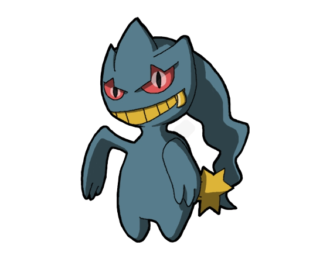

  <app-header></app-header>

<ion-content [fullscreen]="true"  class="ion-content-fullscreen">
    <ion-grid>
      <ion-row class="ion-padding">
        <ion-col>
          <h1 class="ion-padding-top ion-text-center">Bienvenido!</h1>
        </ion-col>
        <ion-col>
          
        </ion-col>
      </ion-row>
      <ion-row>
        <ion-col class="ion-padding-start">
          <ion-item lines="none">Usuario: {{homeUser | titlecase}}</ion-item>
        </ion-col>
      </ion-row>
      <ion-row>
        <ion-col>
          <h2 class="ion-text-center">¿Qué te gustaría hacer?</h2>
        </ion-col>
      </ion-row>
    </ion-grid>
    <ion-row class="ion-padding ion-text-center">
        <ion-button color="tertiary" (click)="goToPage('/editar-informacion')" id="editBtn">
          Editar mi información
          <ion-icon slot="start" name="create"></ion-icon>
        </ion-button>
      </ion-row>
      <ion-row class="ion-padding ion-text-center">
        <ion-button color="tertiary" (click)="goToPage('/pokemon-fantasma-desc')" id="infoPokemon">
          <ion-icon name="logo-snapchat" slot="start"></ion-icon>
          Ver info de pokemon fantasma
        </ion-button>
      </ion-row>
      <ion-row class="ion-padding ion-text-center">
        <ion-button color="tertiary" (click)="goToPage('/pokemon-detalles')" id="listaPokemon">
          <ion-icon name="logo-wechat" slot="start"></ion-icon>
          Conocer los pokemon fantasma
        </ion-button>
      </ion-row>
      <ion-row class="ion-padding ion-text-center">
        <ion-button color="tertiary" (click)="takePhoto()">
          <ion-icon name="logo-wechat" slot="start"></ion-icon>
          Tomarme una selfie
        </ion-button>
      </ion-row>
      <ion-row class="ion-padding ion-text-center">
        <ion-button color="danger" (click)="deleteAccount('/login')">
          <ion-icon name="trash-outline" slot="start"></ion-icon>
          Eliminar mi cuenta
        </ion-button>
      </ion-row>
      <ion-row class="ion-padding ion-text-center" id="endRow">
        <ion-button color="tertiary" (click)="logout('/login')" id="outBtn">
          <ion-icon name="log-out-outline"></ion-icon>
          Salir
        </ion-button>
      </ion-row>
</ion-content>
<app-footer></app-footer>